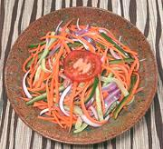

|
Carrot SaladSouth Africa | ||||
| Makes: Effort: Sched: DoAhead: |
4 salad ** 30 min Hours |
This simple salad is very popular in the South African Indian communities, served with curries, biryanis, and especially with bunny chow. | |||
|
|
7 4 4 2 ------ 3 1 ------ |
oz oz oz --- t t --- |
Carrots Cucumber (1) Onion, red Chili Jalapeños -- Dressing Lemon Juice Salt -------------- |
Make - (30 min)
|
qgv_carrot1 210505 inet var -
www.clovegarden.com
©Andrew Grygus -
agryg@aaxnet.com - Linking to and non-commercial use of this page is
permitted.